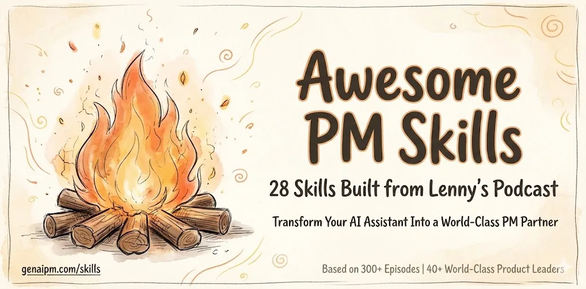
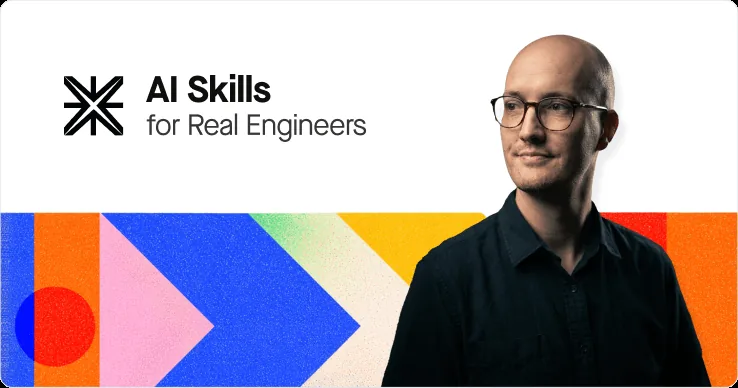
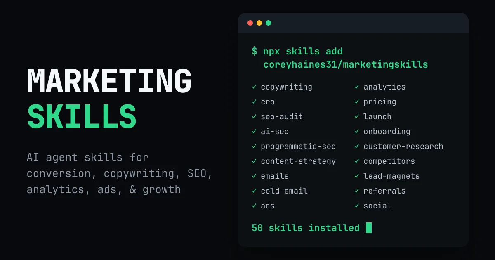
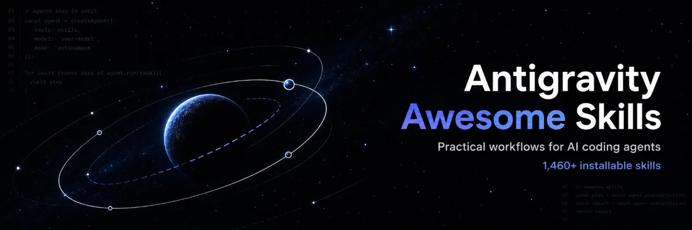

You commented "SOLO". Here it is. Five GitHub repos of agent skills, one for each part of a business: product, engineering, design, marketing and customer support. For each one you get the exact install for Claude Code and for Codex, the skills to try first, and then a short setup that puts all five into one project. There's no course here and nothing to buy.
You'll also get the weekly letter: five useful things I made with AI, with the prompts and workflows inside. Unsubscribe any time.
Already on the list? Enter the same email and it unlocks without subscribing you twice.
On its own, an AI model is still pretty limited. Give it the right skills and one person can do the work of 50 to 100 people.
A skill is a folder with a SKILL.md file in it that tells your agent how to do one job well. Claude Code reads project skills from .claude/skills/. Codex reads them from .agents/skills/. Every install below puts the files in one of those two places, or adds them as a Claude Code plugin.
SKILL.md before you install it.28 product management skills built from Lenny's Podcast transcripts, so your agent helps you work out which customer problems are worth solving before you build anything.

This is the number one skill of the future. Developing your own taste around which customer problems are worth solving is the whole game right now. The skills carry frameworks from guests like Brian Chesky, Shreyas Doshi, Marty Cagan and Teresa Torres. Built by Udi Menkes.
The README has no install command. Each skill is a top-level folder with a SKILL.md inside, so you clone the repo and copy those folders across. The loop skips the images folder.
Claude Code · into .claude/skills
git clone https://github.com/menkesu/awesome-pm-skills.git
mkdir -p .claude/skills
for d in awesome-pm-skills/*/; do [ -f "$d/SKILL.md" ] && cp -R "${d%/}" .claude/skills/; doneCodex · into .agents/skills
git clone https://github.com/menkesu/awesome-pm-skills.git
mkdir -p .agents/skills
for d in awesome-pm-skills/*/; do [ -f "$d/SKILL.md" ] && cp -R "${d%/}" .agents/skills/; doneone-step-better-ai-pm, which needs a free GenAI PM subscription and a GENAIPM_EMAIL environment variable. Delete that folder if you don't want it. Once the copy is done you can delete the cloned awesome-pm-skills folder too.Try these first
You don't call them by name. Tell your agent what you're working on ("I'm starting a new AI feature") and it pulls in the right ones.
Small, composable engineering skills that give your agent a proper development process, so you can do agentic engineering even if you're not technical.

Matt Pocock uses these every day. They make the agent question you before it builds, write a failing test before it writes code, and keep the codebase easy to change. The README gives two ways in. Pick one: installing both leaves you with every skill twice.
Claude Code · official plugin, updates itself
claude plugins install mattpocock-skills
Or from inside a session: /plugin install mattpocock-skills. It's in Claude Code's official marketplace, so there's nothing to add first.
Codex · editable files in your project
npx skills@latest add mattpocock/skills
The installer asks which skills you want and which agent to install them on. Choose Codex, and make sure setup-matt-pocock-skills is one of the skills you take.
Then, in either agent: run /setup-matt-pocock-skills once per repo. It asks which issue tracker you use (GitHub, Linear or local files), which labels you use for triage, and where to save the docs it creates.
Try these first
CONTEXT.md. Matt says to use it every time you make a change.Not sure which one fits? /ask-matt routes you to the right skill.
One design skill that builds a design system for your product, so every screen your customer sees looks deliberate and none of it looks like AI slop.
UI UX Pro Max works out a pattern, style, colours, type and effects for your kind of product, plus a list of things to avoid. In the README's own example that list includes "AI purple/pink gradients". It needs Python 3 on your machine for its search script.
Claude Code · two commands inside a session
/plugin marketplace add nextlevelbuilder/ui-ux-pro-max-skill /plugin install ui-ux-pro-max@ui-ux-pro-max-skill
Or use the CLI the README recommends, from your project folder: npm install -g ui-ux-pro-max-cli then uipro init --ai claude.
Codex · installs to .agents/skills/ui-ux-pro-max
npm install -g ui-ux-pro-max-cli uipro init --ai codex
Try these first
design-system/myapp/MASTER.md, so every later page follows it.python3 .claude/skills/ui-ux-pro-max/scripts/search.py "SaaS dashboard" --design-system --persist -p "MyApp" python3 .claude/skills/ui-ux-pro-max/scripts/search.py "SaaS dashboard" --design-system --persist -p "MyApp" --page "dashboard"
Those paths assume the CLI install for Claude Code. On Codex, swap .claude/skills for .agents/skills.
50 marketing skills covering SEO, copywriting, conversion and paid ads, and all of them read one shared document about your product, so the advice fits your business.

Built by Corey Haines. The product-marketing skill is the foundation. Every other skill checks it first to learn your product, audience and positioning.
Claude Code · into .claude/skills
npx skills add coreyhaines31/marketingskills -a claude-code
The README says to name the agent with -a claude-code. Without it, the installer can drop the skills in .agents/skills/, which Claude Code doesn't read. The plugin route works too: /plugin marketplace add coreyhaines31/marketingskills then /plugin install marketing-skills.
Codex · clone and copy into .agents/skills
git clone https://github.com/coreyhaines31/marketingskills.git mkdir -p .agents/skills cp -r marketingskills/skills/* .agents/skills/
Try these first
One customer support skill from a library of more than 2,400, which gives your agent a support specialist's playbook for setting up a chatbot, ticketing and a help centre.

The repo was renamed from antigravity-awesome-skills. Its banner still carries the old name.
You don't need the whole library for this. Install the one skill, customer-support. It covers chatbot setup, ticket routing and auto-tagging, and building a knowledge base and FAQ from what customers actually ask. The library's installer takes --skills to pick exact skills and --path to choose the folder. Add --dry-run to preview first, then run it again without it.
Claude Code · into .claude/skills
npx agentic-awesome-skills --path .claude/skills --skills customer-support --dry-run npx agentic-awesome-skills --path .claude/skills --skills customer-support
Codex · into .agents/skills
npx agentic-awesome-skills --path .agents/skills --skills customer-support --dry-run npx agentic-awesome-skills --path .agents/skills --skills customer-support
risk: critical. Before you install, run its audit, which reads the skill without running it.npx agentic-awesome-skills audit --skills customer-support
Try these first
Put every function in the same project folder, so one agent can see the whole business at once.
my-business folder and moves into it./setup-matt-pocock-skills once.Claude Code · the whole stack
mkdir -p my-business && cd my-business && git init
mkdir -p .claude/skills
# 1. Product
git clone https://github.com/menkesu/awesome-pm-skills.git
for d in awesome-pm-skills/*/; do [ -f "$d/SKILL.md" ] && cp -R "${d%/}" .claude/skills/; done
# 2. Engineering
claude plugins install mattpocock-skills
# 3. Design
npm install -g ui-ux-pro-max-cli
uipro init --ai claude
# 4. Marketing
npx skills add coreyhaines31/marketingskills -a claude-code
# 5. Customer support
npx agentic-awesome-skills audit --skills customer-support
npx agentic-awesome-skills --path .claude/skills --skills customer-supportCodex · the whole stack
mkdir -p my-business && cd my-business && git init
mkdir -p .agents/skills
# 1. Product
git clone https://github.com/menkesu/awesome-pm-skills.git
for d in awesome-pm-skills/*/; do [ -f "$d/SKILL.md" ] && cp -R "${d%/}" .agents/skills/; done
# 2. Engineering (choose Codex, and take setup-matt-pocock-skills)
npx skills@latest add mattpocock/skills
# 3. Design
npm install -g ui-ux-pro-max-cli
uipro init --ai codex
# 4. Marketing
git clone https://github.com/coreyhaines31/marketingskills.git
cp -r marketingskills/skills/* .agents/skills/
# 5. Customer support
npx agentic-awesome-skills audit --skills customer-support
npx agentic-awesome-skills --path .agents/skills --skills customer-supportOnce everything is copied you can delete the cloned awesome-pm-skills and marketingskills folders.
Then paste this into Claude Code or Codex
You are my operating partner for a one-person business. This project should have five sets of skills installed: - Product: awesome-pm-skills (zero-to-launch, strategic-build, continuous-discovery and the rest) - Engineering: mattpocock/skills (grill-with-docs, tdd, diagnosing-bugs and the rest) - Design: ui-ux-pro-max - Marketing: marketingskills (product-marketing, seo-audit, ads and the rest) - Customer support: customer-support 1. Check the install. Look in .claude/skills (Claude Code) or .agents/skills (Codex), and at any installed plugins. For each of the five functions, tell me whether it's there and list the skill names you found. If anything is missing, give me the exact command to fix it and stop. 2. Ask me up to five questions about the business: what I sell, who it's for, where it's at today, and what I want done in the next 30 days. Wait for my answers. 3. Plan my first week with one function per day. Monday is product, Tuesday engineering, Wednesday design, Thursday marketing and Friday customer support. For each day, tell me which skill you'll use, what we'll have at the end of the day, and how we'll know it worked. Keep each day to one focused task. 4. Finish by telling me what to note at the end of each day about what worked and what didn't, so we can improve the skills themselves next week.
If you only install one
A personal harness starts with a foundational set of skills and a self-improvement loop, and then it compounds on real-world learnings.
These five repos are the foundation. They're other people's playbooks, written for everyone. What makes them yours is the loop. Every time a skill gets something wrong for your business, fix its SKILL.md and write down why. A month later the skills know your customers, your product and your standards.
That's how I run my own content pipeline. It's never been easier to dive in. Install one repo today and use it on real work.
You're on the list now. Every week you'll get five useful things I made with AI, with the prompt or workflow behind each one. This stack was one of them.
Back to the site